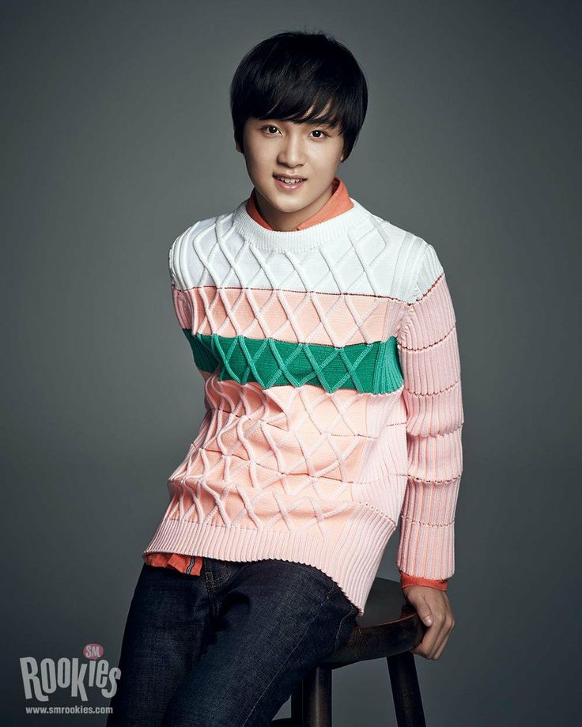

Debut dan Karir Haechan

-
2013: Mengikuti Audisi SM Entertainment
Sejak kecil, Ibu Haechan memang selalu mendorong anak pertamanya itu mewujudkan impiannya sebagai penyanyi. Yap, Haechan benar-benar tumbuh di keluarga yang mendukung segala mimpinya. Atas dasar itulah, Haechan di usia ke-13 tahun, begitu berani mengikuti audisi di SM Entertainment yang dielu-elukan sebagai agensi hiburan idol K-Pop terbesar di Korea Selatan. Saat audisi, Haechan membawakan lagu “Hello” milik solois Huh Gak Audisi yang diikuti Haechan bukanlah audisi biasa, melainkan ‘Saturday Auditions’ yang dianggap sebagai audisi paling sulit untuk dapat lolos. Hal tersebut karena selama audisi, dinilai secara langsung oleh Lee Soo Man, pendiri SM Entertainment. Namun siapa sangka, Haechan langsung dapat lolos ke babak selanjutnya! -
2014: Diperkenalkan Sebagai Bagian Dari Proyek SM Rookies
Pada 17 Juli, Haechan akhirnya diperkenalkan ke publik sebagai bagian dari proyek pre-debut SM Entertainment bertajuk SM Rookies. Setahun kemudian, Haechan dan member NCT yang kala itu masih menjadi bagian dari SM Rookies, juga didapuk sebagai Mouseketeer di program “The Mickey Mouse Club” yang tayang di Disney Channel Korea. Program acara ini memiliki konsep berupa penampilan musik dan menari oleh para Mouseketeer. Para Mouseketeer ini terdiri dari 9 member SM Rookies yakni Mark Lee, Jeno, Haechan, Jaemin, Jisung, Koeun, Hina, Herin, dan Lami. Sayangnya, keempat trainee perempuan SM Rookies ini tidak bisa debut di bawah naungan SM Entertainment. -
2016: Berhasil Debut Bersama NCT 127 dan NCT Dream
Tepat pada 7 Juli, akhirnya Haechan berhasil debut bersama grup NCT dengan unit NCT 127 yang berbasis di Seoul. Nomor “127” itu mengacu pada koordinat garis bujur kota Seoul. NCT 127 ini beranggotakan 10 member yakni Taeil, Johnny, Taeyong, Yuta, Jaehyun, Doyoung, Winwin, Jungwoo, Mark, dan Haechan. Di grup tersebut, Haechan memiliki posisi sebagai vokalis utama dan penari utama. Debut NCT 127 merilis lagu utama berjudul “Fire Truck” dan beberapa lagu lainnya seperti “Once Again” serta “Switch”. Lagu debut mereka langsung menduduki puncak Gaon Music Chart dan peringkat ke-2 di Billboard World Albums Chart dengan total penjualan lebih dari 80.000 album.
Sebulan setelah itu, tepatnya pada 18 Agustus, pihak SM Entertainment merilis pengumuman akan debutnya unit NCT Dream yang beranggotakan 7 member. Ketujuh member NCT Dream itu adalah Haechan, Mark, Jaemin, Jeno, Renjun, Chenle, dan Jisung. Sub-unit NCT Dream memang digadang-gadang hanya beranggotakan member yang masih remaja saja. Tidak hanya itu saja, bahkan dahulu saat masih awal debut, pihak SM Entertainment menjelaskan bahwa hanya di unit NCT Dream ini diadakan sistem graduate. Artinya, member NCT Dream yang sudah berusia lebih dari 20 tahun, akan “lulus” dari sub-unit tersebut. Itu berarti, member NCT Dream akan mengalami pergantian secara terus-menerus mengingat sistem member NCT itu memang tidak terbatas. Namun akhirnya, pada tahun 2020, sistem graduate pada NCT Dream resmi diubah. Alhasil, member NCT Dream tetap bertujuh dan tidak akan diubah lagi. Selain itu, sistem member NCT yang unlimited alias tidak terbatas juga dihentikan seiring dengan berita akuisisi SM Entertainment yang terjadi akhir-akhir ini. -
2018: Berpartisipasi Dalam Proyek NCT 2018
Pada tahun 2018, pihak SM Entertainment memperkenalkan adanya proyek NCT 2018 yang melibatkan seluruh 18 member NCT. Pada proyek ini sekaligus memperkenalkan 3 member NCT baru yakni Kun, Lucas, dan Jungwoo. Lee Haechan tentu saja turut andil dalam proyek ini termasuk dalam lagu “Go” (NCT Dream), “Touch” (NCT 127), dan “Black On Black” (NCT 2018). -
2019: Debut Bersama NCT U Untuk Proyek SM Station
Pada tahun 2019 ini, Lee Haechan resmi debut bersama sub-unit NCT U yang beranggotakan Taeil, Doyoung, dan Jaehyun untuk lagu berjudul “Coming Home” yang merupakan bagian dari proyek SM Station X. Sistem member NCT ini mungkin sedikit membingungkan bagi orang awam. Singkatnya, member sub-unit NCT U memang dapat berubah-ubah sesuai dengan comeback dan lagu yang akan dirilis. NCT U mengacu “kesatuan member” supaya setiap member dapat ‘merasakan’ debut dengan orang dan genre musik berbeda. -
2020: Berpartisipasi Dalam Proyek NCT 2020
Pada tahun 2020, Lee Haechan lagi-lagi berpartisipasi dalam proyek NCT 2020 yang tentunya sekaligus memperkenalkan 2 member baru yakni Sungchan dan Shotaro sehingga total keseluruhan member NCT adalah 23 orang, termasuk member WayV. Proyek NCT 2020 ini pada dasarnya konsepnya sama dengan NCT 2018 yang mana menggabungkan seluruh member dari sub-unit yang ada menjadi satu penampilan. Pada proyek NCT 2020 ini merilis album bertajuk NCT 2020: Resonance dengan lagu utama “Resonance” dan beberapa lagu lainnya seperti “Make A Wish (Birthday Song), “90’s Song”, “Work It”, “Raise The Roof”, dan “Misfit”. Lee Haechan sendiri telah turut andil dalam lagu “Resonance” dan “90’s Song”.
Sumber: Gramedia (Link Informasi)